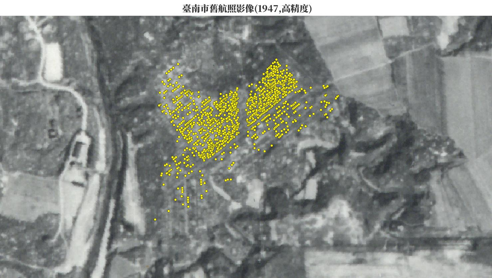
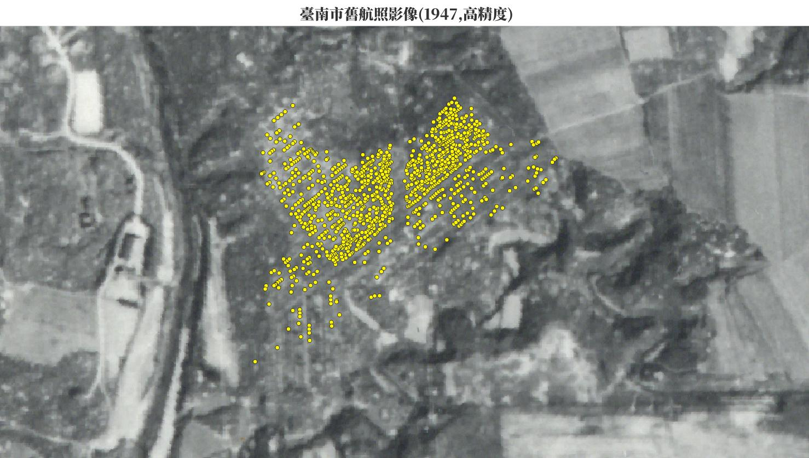

墓塚基礎資料分析#
套疊歷史圖層#
完成墓塚定位後，產出預期「新坪」的墓地範圍，再套疊歷史地圖，試圖推測該墓地的形成時間。
首先從1904年台灣堡圖可發現一區域，相似於「新坪」範圍，且不同於周圍有標記代表墓地的⊥符號，因此推斷該區在1904年以前，尚未有墓葬行為或為私人地使用。
從1947年臺南市舊航照影像觀察，該區域已形成密集排列的墓地，套疊墓塚點位後，形狀大致吻合墓塚調查範圍。透過歷史地圖的比對，推測「新坪」可能形成於1904-1947年間，更詳細的時間點需從現地墓塚調查進行分析。
 

墓塚年代分佈#
將1129門墓塚點位，以墓碑年代進行分類，所得出的結果最多落在日治時期，且集中於皇民化時期，再進一步分析1937-1945年數量，可觀察到1941年後數量大幅上升，而1941年為「國民精神總動員」階段到「皇民奉公運動」階段。 因此推測「新坪」在昭和時期已有墓葬行為，最高峰落於1941-1944年間，而到戰後持續有埋葬及重修行為。

墓塚形制分佈#
在「墓塚辨識」的部分已簡述說明各類墓塚形制的特徵，目前所調查1129門墓中，日式及漢日混合合計數量就佔有715門，該區所呈現墓葬地景不同於周圍區域，藉此可以推測為何當地工作者會稱此地為「新墓地」。
墓葬方式分佈#
臺灣漢人自明清時期以來的墓葬方式，多以單人葬為主，可能會有夫妻合葬或直系親屬的附葬。在「新坪」範圍內發現許多歷代、累代之墓等，以同姓家族集中合葬的方式，數量共計302門。形成此現象原因之一可能與日治時期以來，都市擴張逐漸縮減墓地範圍，後代家屬將各地墓塚遷葬集中於一處。